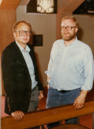

About


The company was founded in 1979, developing software to make graphic color display on a screen from first data on punch cards / then tapes.
The first programs were used in the search for oil and minerals.
In 1979 there were two men
In 1980 the turnover was of 80.000 DKK
In 1984 exporting programs to businesses worldwide, and the turnover was of 100 million DKK.
In 1986 there were 133 employees worldwide, sales offices in Paris, London, Munich, Boston, Chicago, Dallas, Los Angeles, and San José + agents in the far east, Japan, China and more.
This was a Danish – Swedish alliance.
The Dane, Jan Gunder Knudsen (MSC in engineering, with specialty in silicate chemistry, datalogy) got the idea when he was working on his PHD degree at IMSOR (Institute of Mathematical Statistics and Operations Research) at the Technical University of Denmark, trying to help geologists find mineral deposits – silver, molybdenum, lead, copper – in Jameson Land at Scoresby Sund in Eastern Greenland, where Jan spent the summer of 75 to study how geologists from all over the world work, and collected their data from physical sediment washing.
The first idea was to use advanced statistical methods, but he soon realized that this was not the way geologists work and think. They think in maps with colors to indicate areas of interests.
So he realized it was important to find a way to transfer their data results to maps that they would understand.
He searched all over the world, including the US, to find someone who could do that, and found out that in Sweden, the university of Lund, the Data Center of Lund, they were able to do this.
This is how he met his partner Mikael Jern.
In this place there was a university professor Hertz (Grandchild of the Hertz we know from the Hertz measurement for electric devices) –
Prof. Hertz had invented the Ink jet color plotter - that by means of color jets (yellow, blue and red) could make pictures.
The ink jets must be controlled, and Mr. Jern found a method to control them by a computer. (The “ancestor” of the plotter was the ink ray system for electro cardiograms used since the 30’es)
In the 70ies the use of computers for graphics had just begun, but that was VECTOR graphics – (the basic of CAD-systems).
What was so unique about the Uniras invention was that we could treat raster graphics.
With vector graphic systems there is possibility of getting only a few colors.
With the raster graphic system there are innumerable possibilities of colors.
Uniras could produce 3 D pictures on screen and paper, based on mathematics – in color and with light effects – to illustrate e.g. mountains and the sea bottoms, and one had not been able to do that before.
So the programs of UNIRAS were used by
Artists, in 2 and 3 dimensions -
the oil industry trying to locate oil deposits,
chemists for molecule models in 3D,
bank people for column charts.
Different companies could make fancy presentations and market research on maps and charts.
In Germany it was used for election prognosis, also directly during the election.
It was also used to visualize satellite data from remote sensing, weather forecast images and airplane models to make it possible to analyze outer stress end pressure on aircrafts to see the strength and design of the construction.

Founded in 1979 by
Jan Gunder Knudsen and
Mikael Jern
Pioneers in Computer Graphics